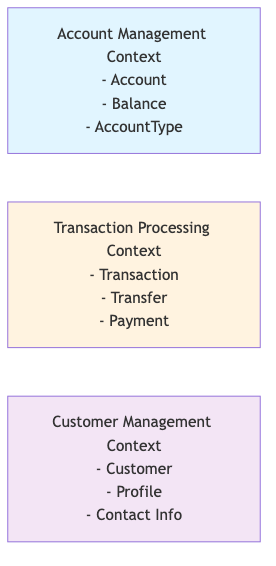
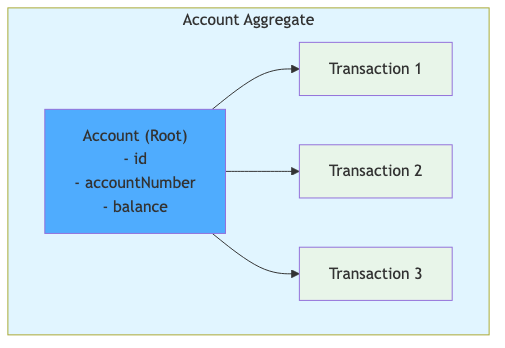
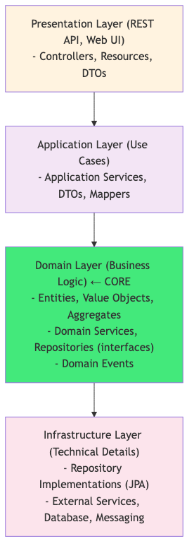
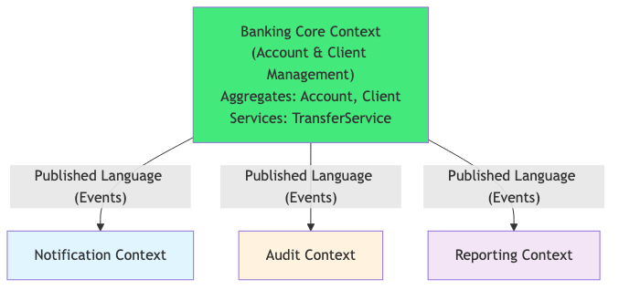

Course Content
All sections — click a title to expand.
🧭 What is DDD?
Philosophy — code must reflect the business
Domain-Driven Design (DDD), introduced by Eric Evans in 2003, places the business domain at the heart of software design. Code must not be a mere technical translation of requirements — it must speak the same language as domain experts.
- The domain model is the living representation of the business in code
- Accidental complexity (infrastructure, frameworks) is separated from essential complexity (business rules)
- Code clearly expresses the invariants, constraints and behaviours of the domain
- Every change to a business rule translates directly into a change in the model
Dev/domain expert collaboration
- DDD requires continuous collaboration between developers and domain experts
- Domain experts bring knowledge of rules, edge cases and priorities
- Developers structure this knowledge into a coherent software model
- Event Storming or Domain Storytelling sessions facilitate this collaboration
Shared ubiquitous language
The Ubiquitous Language is a common vocabulary used by all team members — developers AND domain experts — in conversations, documentation AND code.
- Class names, methods and variables reflect business terms (e.g.
Account,debitAccount()) - Eliminate ambiguous terms and double definitions
- Evolves with the understanding of the domain
Strategic vs tactical DDD
- Strategic DDD — decompose the problem into sub-domains and Bounded Contexts, map their relationships (Context Map)
- Tactical DDD — implement each Bounded Context with the building blocks (Entities, Value Objects, Aggregates, Repositories, Domain Services, Domain Events)

🗺️ Strategic Pattern — Bounded Context
Sub-domain with its own model and language
A Bounded Context is an explicit boundary inside which a particular domain model applies. Within this boundary, every term of the ubiquitous language has a precise and unique definition.
- The same word can have different meanings in two Bounded Contexts (e.g. Client in the Account context vs. Marketing)
- Each Bounded Context has its own object model, its own database, its own teams
- Boundaries prevent model corruption by concepts belonging to other contexts
Context Map — relationships between contexts
The Context Map is a diagram that documents the relationships between the different Bounded Contexts of a system.
- Visualises dependencies, data flows and integration points
- Reveals power and priority relationships between teams
- Guides architectural decisions on inter-context communication
Integration patterns between contexts
- ACL (Anti-Corruption Layer) — translation layer that protects the local model from foreign concepts, avoids contamination of the target model
- Shared Kernel — subset of model shared between two teams, requires strong coordination to evolve
- Partnership — two teams evolve together by synchronising their planning, for tightly coupled contexts
- Customer/Supplier — one team provides a service, the other consumes it
- Conformist — the downstream team adopts the upstream team's model without adapting
- Published Language — formalised exchange language (e.g. JSON Schema, OpenAPI)

🧱 Tactical Patterns — Entity and Value Object
Entity — unique identity, mutability
An Entity is a domain object that has a unique identity persisting over time, even if its attributes change.
- Identity is represented by an explicit identifier (
AccountId,ClientId) - Two entities are equal if and only if their identifiers are equal (equals/hashCode based on id)
- An entity can be mutable — its state changes over time (account balance, status)
- It encapsulates its business invariants — the rules that must always be respected
- Examples:
Account,Client,Order,Employee
Value Object — no identity, immutability, equality by value
A Value Object is a domain object that represents a concept without its own identity — its value is its identity.
- No identifier — two Value Objects with the same attributes are equivalent
- Immutability — a Value Object never changes after creation (use
final) - Equality by value — equals/hashCode based on all attributes
- Replaceable — you do not modify a VO, you create a new one
- Examples:
Money,AccountNumber,Address,DateRange,Email
Entity vs Value Object comparison
- Entity: Who is it? — its identity matters
- Value Object: What is it? — its value matters
- Rule: if you can replace an object with another having the same attributes with no business impact → it is a Value Object

🔒 Tactical Pattern — Aggregate
Aggregate Root and business invariants
An Aggregate is a cluster of domain objects (Entities + Value Objects) treated as a coherent unit. The Aggregate Root is the single entry point for any modification.
- Business invariants are guaranteed inside the aggregate's boundaries
- Every modification passes mandatorily through the root — never directly on internal objects
- The aggregate is loaded and saved as a single transactional unit
Reference by ID to other aggregates
- An aggregate must never contain a direct reference to another aggregate root
- Reference another aggregate by its identifier only (
ClientId clientId, notClient client) - This maintains clear transactional boundaries and avoids implicit coupling
Aggregate design rules
- ✅ Protect business invariants — the aggregate validates its own rules
- ✅ Small size — an aggregate must stay small (avoid god objects)
- ✅ Transactional consistency — one transaction = one modified aggregate
- ✅ Modify only one aggregate per transaction — coordinate multiple aggregates via Domain Events
Banking aggregate Account/Transaction
In the banking application, Account is the aggregate root that contains a list of Transaction. Every credit or debit operation passes through Account, which checks the invariants (positive balance, transaction limit, active status).

🗄️ Repository Pattern
Data access abstraction
The Repository is an abstraction that simulates an in-memory collection of objects for aggregates. It separates business logic from data access details.
- The domain only knows the repository interface — never the concrete implementation
- The repository hides the complexity of persistence (JPA, NoSQL, external API)
- Facilitates unit testing — you can substitute an in-memory implementation
Interface in the domain
- The interface is defined in the domain layer (
domain.portordomain.repository) - It speaks the domain language:
findById(AccountId),findByClient(ClientId),save(Account) - One repository per aggregate root — not a generic repository for all entities
Implementation in the infrastructure
- The concrete implementation (
JpaAccountRepository) lives in the infrastructure layer - It uses JPA, JDBC, MongoDB or any other persistence mechanism
- Injected via CDI — the domain never sees the concrete implementation
Object collection pattern
- The repository behaves like a
Setor aCollectionof aggregates - Typical methods:
findById,findAll,save(add/update),delete - No complex query methods in the interface — use Specifications or Query Objects if necessary
⚡ Domain Services and Domain Events
Domain Service for operations without a natural entity
A Domain Service encapsulates business logic that does not naturally belong to any Entity or Value Object — for example an operation involving multiple aggregates.
- A domain service is stateless — it does not retain state between calls
- Example: a money transfer involves two accounts — neither
AccountAnorAccountBis responsible for the entire operation - Named after the business verb:
MoneyTransferService,FraudDetectionService - To be distinguished from Application Services (orchestration) and Technical Services (infrastructure)
Domain Event — past business fact
A Domain Event represents something important that happened in the domain — it is a past, immutable fact, named in the past tense: TransferCompleted, AccountOpened, PaymentFailed.
- Domain Events decouple aggregates — one aggregate publishes an event, others react
- Allow eventual consistency between aggregates without distributed transaction
- Immutable — contain all information necessary for the reaction
Publication and observation with CDI (@ApplicationScoped)
- Jakarta CDI Events (
Event<T>) are the natural mechanism in Jakarta EE - The publisher injects
Event<TransferCompletedEvent>and callsfire() - Observers use
@Observesto react in a declarative manner - Pattern suited for synchronous intra-JVM events
🏗️ DDD Layered Architecture
The 4 layers of DDD architecture
- Domain — the core: Entities, Value Objects, Aggregates, Domain Services, Repository Interfaces, Domain Events. No dependency towards the outside.
- Application — orchestrates use cases: Application Services, Command Handlers, DTOs. Coordinates aggregates and calls Domain Services.
- Infrastructure — concrete implementations: JPA Repositories, Message Brokers, HTTP clients, technical adapters.
- Presentation — entry points: Jakarta REST resources, JSF controllers, CLI. Translates requests into application commands.
Recommended package structure
com.esipe.bank.domain— entities, VOs, aggregates, interfacescom.esipe.bank.domain.event— domain eventscom.esipe.bank.application— application services, use casescom.esipe.bank.infrastructure.jpa— JPA repositoriescom.esipe.bank.presentation.rest— Jakarta REST resources
Dependencies towards the inside (Dependency Rule)
- The domain depends on nothing — not Jakarta EE, not JPA, not any framework
- The application depends on the domain
- The infrastructure depends on the domain and the application (implements the interfaces)
- The presentation depends on the application
- Dependency Inversion (DIP) allows the infrastructure to implement the domain interfaces
🔄 Refactoring towards DDD — Banking Application
Anemic model vs rich model
The Anemic Model (anti-pattern) is an object that contains only getters/setters with no business logic — the logic is scattered across services. The Rich Model encapsulates the logic in the entities themselves.
- Anemic:
account.setBalance(newBalance)— no rules checked - Rich:
account.debitAccount(amount)— checks balance, status, invariants
Before refactoring — procedural code
- Class
Accountwith only fields and getters/setters - Service
BankingServicecontaining all debit, credit, validation logic - Business rule duplication across multiple services
- Invisible business rules — no method expressing intent
After refactoring — rich DDD model
AccountId— Value Object for identityMoney— immutable Value Object with arithmetic operationsAccountNumber— Value Object with validation and generationAccount— Entity/Aggregate Root with business methods (debitAccount,creditAccount)- Business rules centralised in the aggregate — impossible to create an invalid state
Refactored Value Objects Money and AccountNumber
Moneyreplaces bareBigDecimal— adds currency, typed operations and validationsAccountNumberreplaces bareString— validated format, centralised generation- Impossible to confuse an amount with an account number in code — maximum type safety